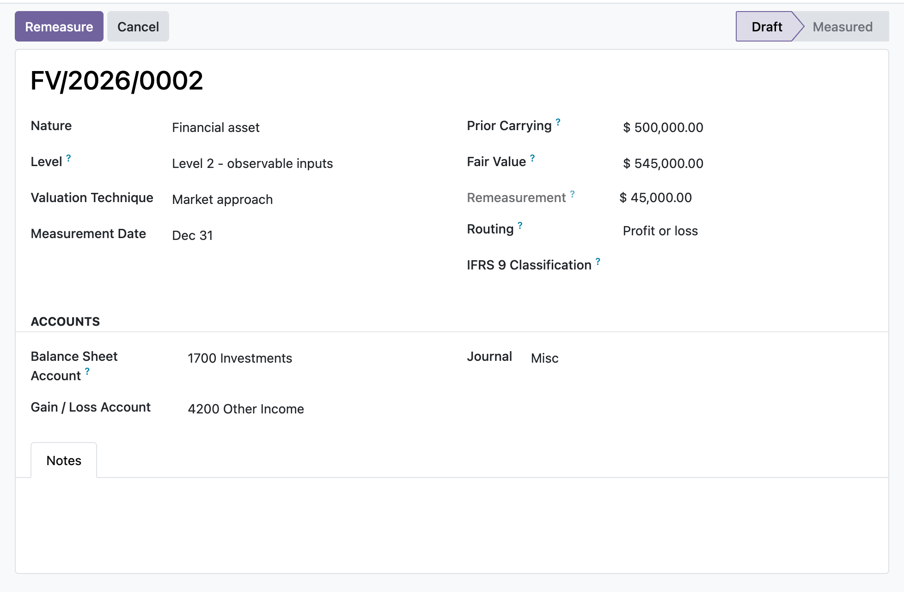

Classify each item in the fair-value hierarchy, record its valuation technique, then remeasure the carrying amount to fair value and post the gain or loss to profit or loss or OCI in one balanced, sealed journal entry.
The remeasurement leg knows whether the item is a financial asset or a financial liability. A rise in an asset is a gain that increases the balance-sheet carrying amount; a rise in a liability is a loss that increases the liability. The mirror logic for falls is handled too, so the sign is never guessed.
Beyond a simple P&L or OCI switch, items carry an IFRS 9 classification: FVTPL, FVOCI-debt (recycles to profit or loss on derecognition) or FVOCI-equity election (transfers within equity, never recycled). The recycle action clears the accumulated OCI reserve to the correct destination and blocks a profit-or-loss transfer for an equity election.
A missing journal, balance-sheet account, gain/loss or OCI account, a nil remeasurement, or a balance-sheet account that is actually a profit-or-loss account each stop the post with a clear error instead of writing a wrong or unbalanced entry.
You open the fair value item for an investment held at 1,000, set the new fair value to 1,200 at the measurement date, and choose OCI routing with an FVOCI equity election. Remeasure posts a balanced entry, 200 debit to the balance-sheet asset and 200 credit to the OCI reserve, then rolls the carrying amount to 1,200 so next quarter measures only the further change. On disposal you recycle the reserve, and because it is an equity election the module transfers it within equity rather than through profit or loss. For a Level 3 holding you also keep the period roll-forward, opening balance through gains, purchases, transfers and settlements to a computed closing balance that you can tie back to the item's fair value.
In the shipped code today, each one a place where a cheaper module silently does the wrong thing.
For a financial liability the posting mirror is applied: a rise in fair value increases the liability and is a loss, a fall decreases it and is a gain, so the gain/loss sign is not the same as for an asset.
A constrains check refuses a balance-sheet account whose internal group is income or expense, because a profit-or-loss position leg would double-count the remeasurement and misstate the carrying amount.
Once an item is measured, fair value, prior carrying, routing, nature and the three accounts are frozen on write, so a recorded remeasurement cannot be retro-edited out from under its posted journal entry.
An item that has posted a remeasurement cannot be deleted, only cancelled, so its journal entry is never orphaned; items that never posted stay deletable.
Recycling an FVOCI equity reserve refuses to route to a profit-or-loss account and requires an equity destination, enforcing that an equity election is never reclassified to profit or loss.
odoo 19 fair value, IFRS 13 odoo, fair value hierarchy level 1 2 3, valuation technique market income cost, observable unobservable inputs, fair value through profit or loss, fair value through OCI, FVOCI recycling odoo, IFRS 9 classification FVTPL FVOCI, Level 3 reconciliation rollforward, remeasurement journal entry, fair value accounting community

Fair value measurement with the IFRS 13 hierarchyAn IFRS 13 fair value measurement classified into the level 1, 2, or 3 hierarchy by valuation technique, with the remeasurement routed to profit or loss or OCI.
Premium ERP Heritage modules that extend the same stack, each built to the same engineering bar.
Show the Hijri (Umm al-Qura) date alongside Gregorian dates across Odoo 17
Connect Odoo partner records to the Saudi SPL National Address service and the Wathq commercial registry
One click install of the full Employment Hero integration for Odoo Community, covering the connector, two way syn...
The Malaysia country pack for the ERP Heritage Employment Hero integration
A dependency free asynchronous job queue that runs long running and fan out work out of band of the request that...